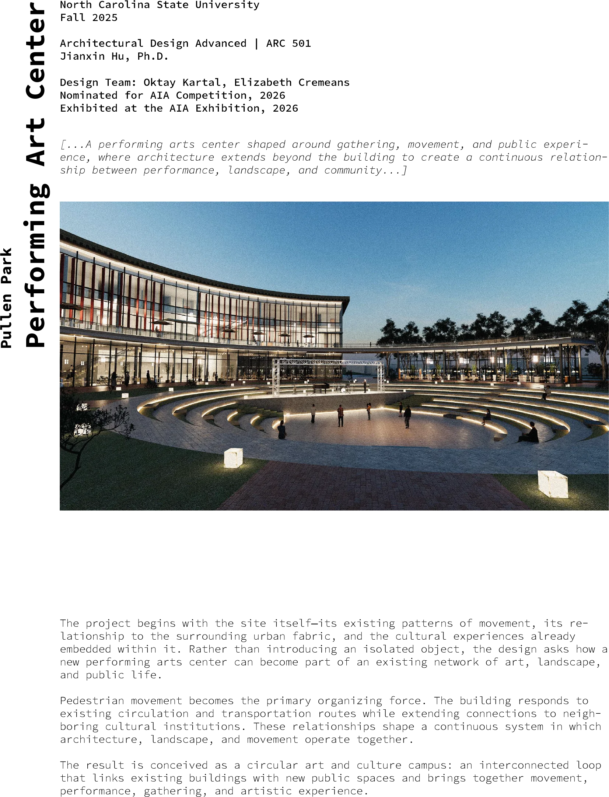
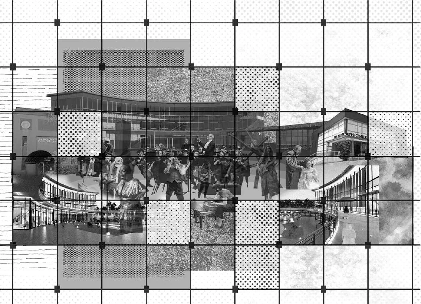
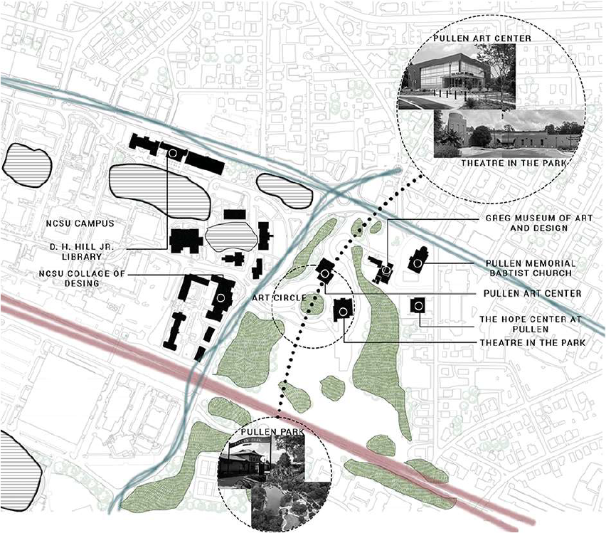
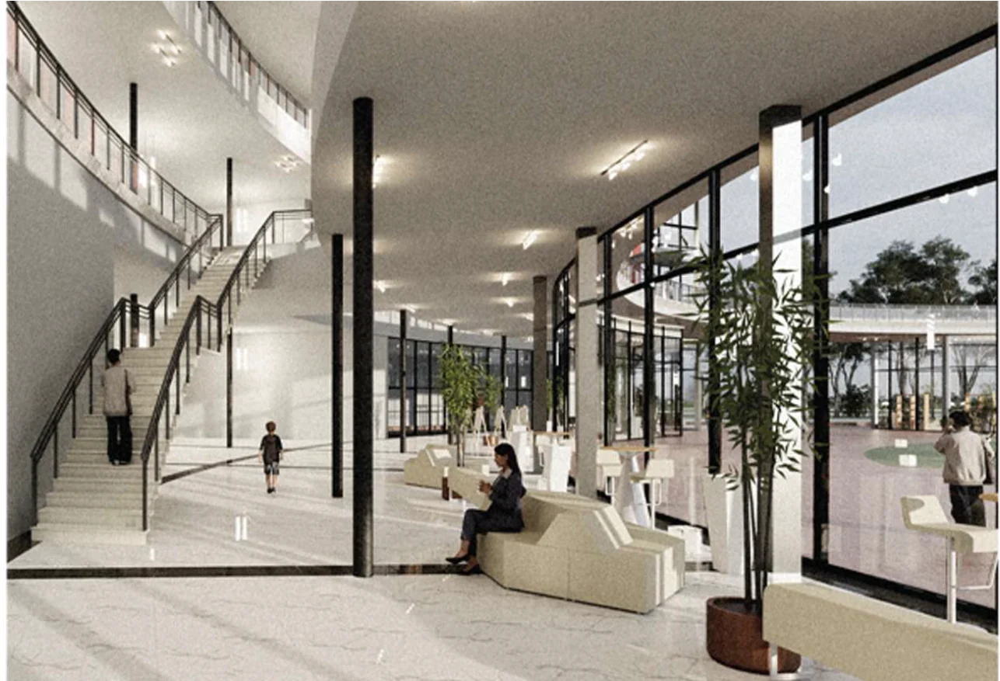
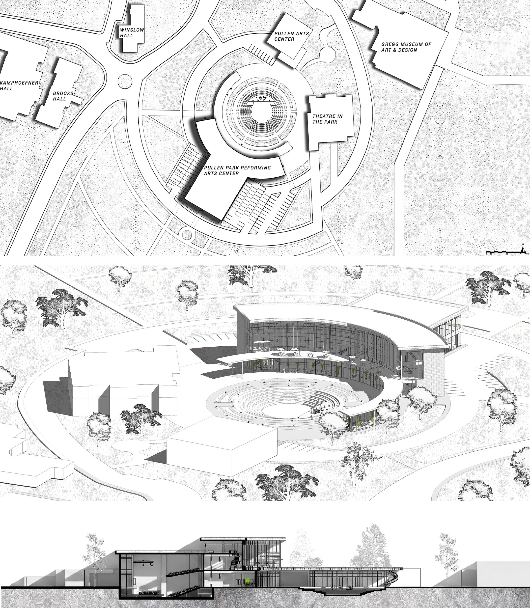
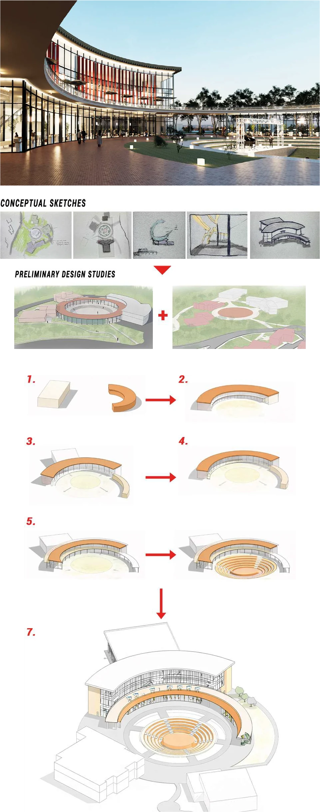
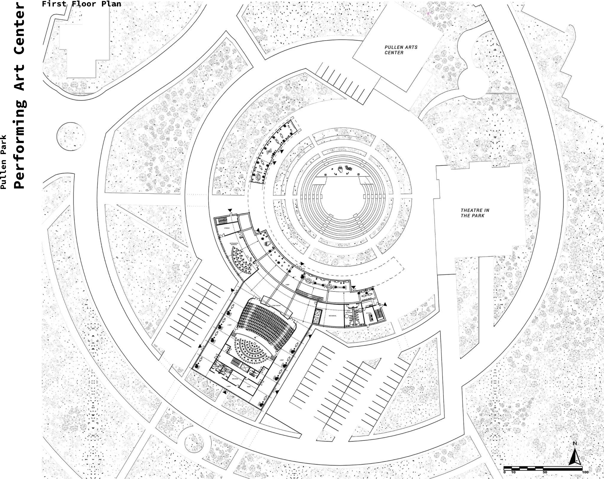
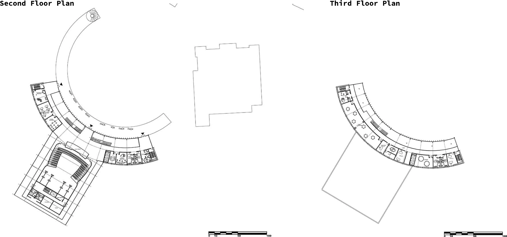
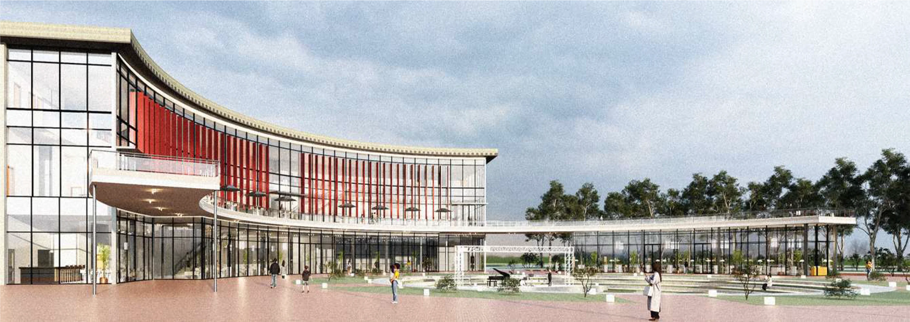

[...A performing arts center shaped around gathering, movement, and public experience, where architecture extends beyond the building to create a continuous relationship between performance, landscape, and community...]

The project begins with the site itself—its existing patterns of movement, its relationship to the surrounding urban fabric, and the cultural experiences already embedded within it. Rather than introducing an isolated object, the design asks how a new performing arts center can become part of an existing network of art, landscape, and public life.
Pedestrian movement becomes the primary organizing force. The building responds to existing circulation and transportation routes while extending connections to neighboring cultural institutions. These relationships shape a continuous system in which architecture, landscape, and movement operate together.
The result is conceived as a circular art and culture campus: an interconnected loop that links existing buildings with new public spaces and brings together movement, performance, gathering, and artistic experience.
Preserving Identity – Creating Connection
Rather than replacing the existing cultural fabric, the design preserves the identities of the surrounding buildings and connects them through a new architectural and public-space system.
At the center, a shared amphitheater becomes a common ground for gathering, performance, and interaction. Above it, an elevated circular cantilever reinforces this central space while framing a collective public experience.
Together, these elements create a continuous cultural network in which existing and new architecture operate as an interconnected campus, strengthening continuity, collaboration, and public life.






Second Floor Plan
Third Floor Plan

